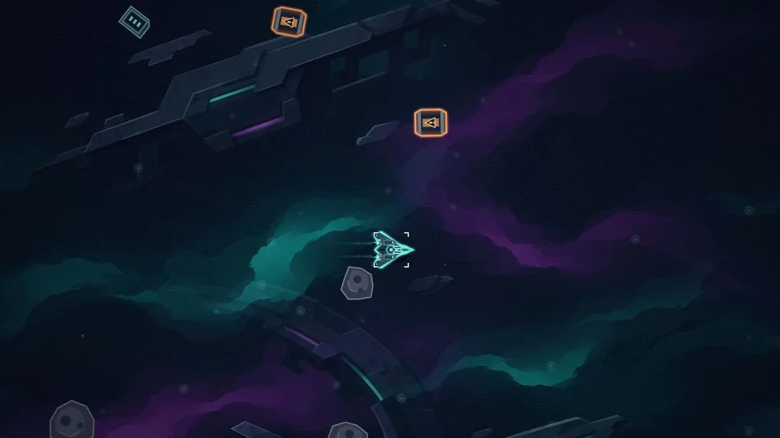
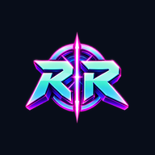
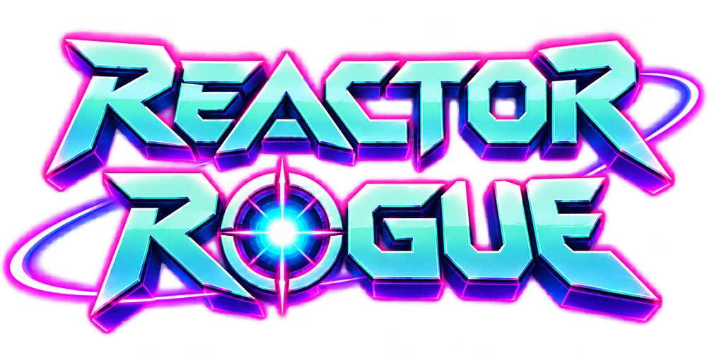
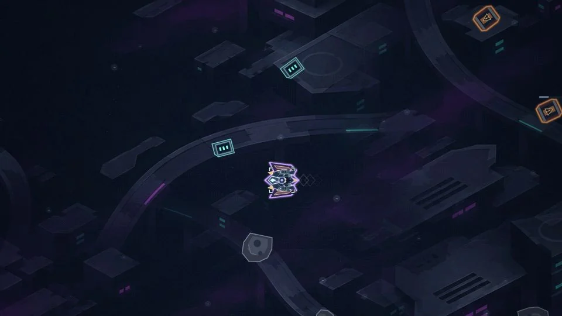
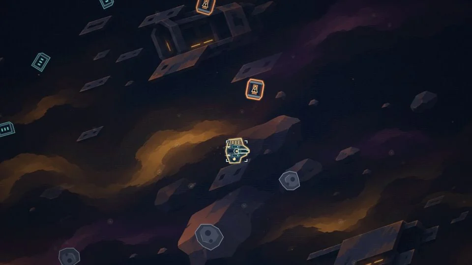
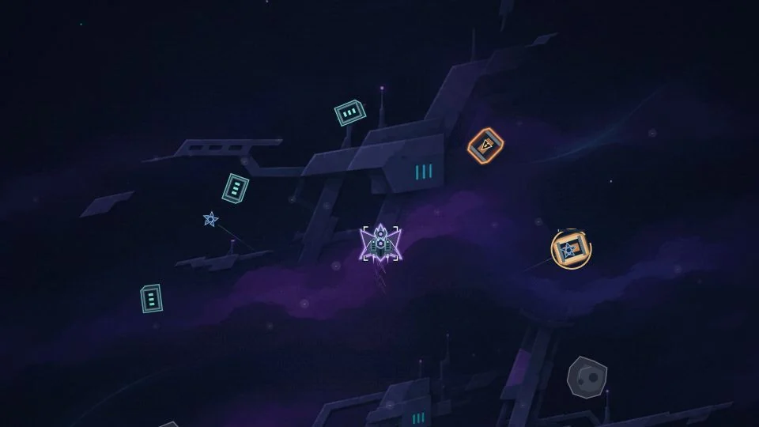
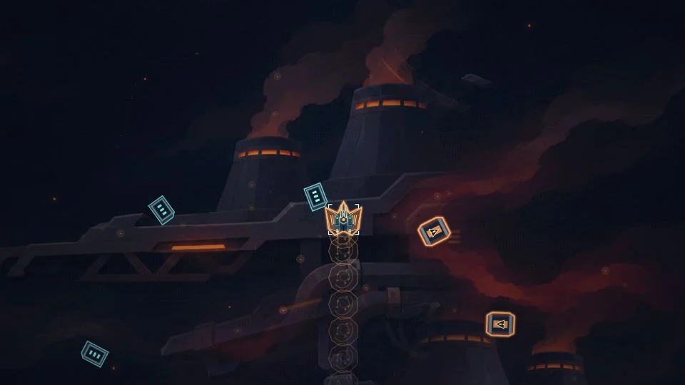
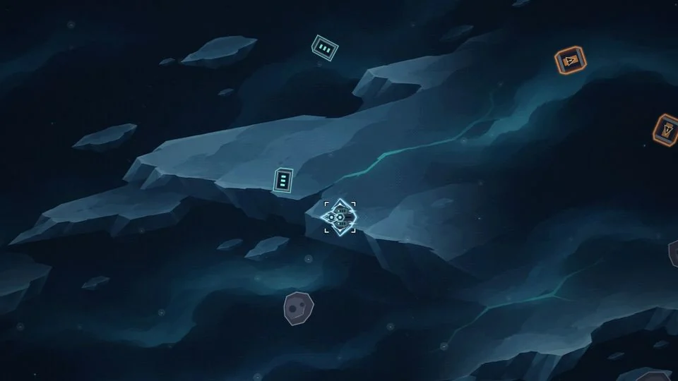

01 / OPEN ARENA
Neon Expanse
Your starting frontier. Open space, familiar patrols and room to find your build.

REACTOR ROGUEINDEPENDENT FLIGHT SYSTEMS / BROWSER EDITION

One ship. An incoming swarm. Stack weapons, discover evolutions and push through three sector bosses.
Free to play · Phone, tablet & PC · No account needed to play

A RUN BUILT BY YOU
Each ship brings its own starter weapon, passive and movement ability.
Pick upgrades as you level. Combine weapons and supports to unlock evolutions.
Defeat bosses at 3, 6 and 10 minutes. Bank your clear or continue into endless.
PICK YOUR NEXT FRONTIER
Unlock new routes as you progress.

Your starting frontier. Open space, familiar patrols and room to find your build.

Drifting asteroid lanes and a rugged salvage fleet.

Arc strikes, abandoned defence turrets and crystalline ships.

Furnace platforms, heat vents and heavy industrial threats.

Fractured ice shelves and crystal fleets. Frozen debris and crystal fleet patrols.
Neon rooftops, distant traffic and scattered rooftop wreckage.
FLIGHT BRIEFING
Weapons fire automatically by default. Keep moving, collect XP and choose one upgrade each time you level up.
Take your first flight →Drag to steer. Tap your ship’s ability button to dash, boost or activate its special move. Combat pauses while you choose upgrades.
Move with WASD or arrow keys. Use Shift or middle-click for your ship ability. Press Esc or P to pause. Change aiming and firing modes in Settings.
On iPhone or iPad, open the game in Safari, use Share, then Add to Home Screen. On Android or desktop, use your browser’s install option.
Progress is saved in the current browser. Before changing browser or installing, make a backup in Settings → Profiles & saves.
Credits, ship licences and achievements save on this device. Export a backup in Settings → Profiles & saves and import it on another device. Online accounts and automatic cloud sync are not live yet.
Once the game has loaded and its offline files finish saving, it can open without a connection. Connect again for updates. A new version activates once all open game tabs and installed game windows close.
HELP SHAPE THE NEXT RUN
Tell us what happened, what you expected and which device you were using. Please don’t include passwords, private save files or personal information.
Send a report directly to the developer. No account or email address needed. Reports are stored in our private feedback inbox, not posted publicly. You can also download a copy.
REACTOR ONLINE